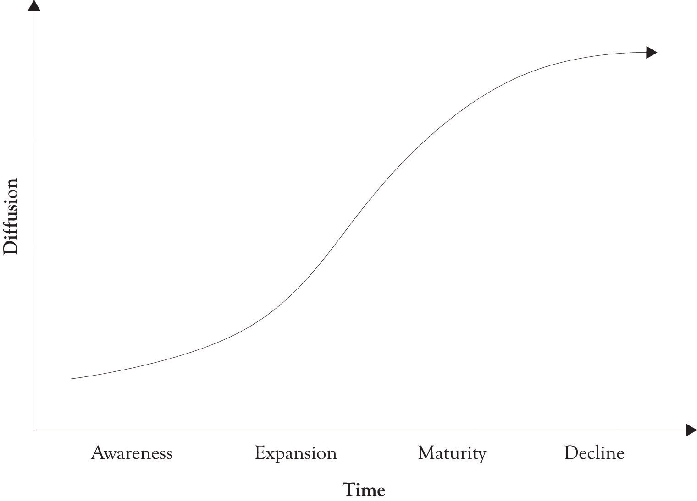
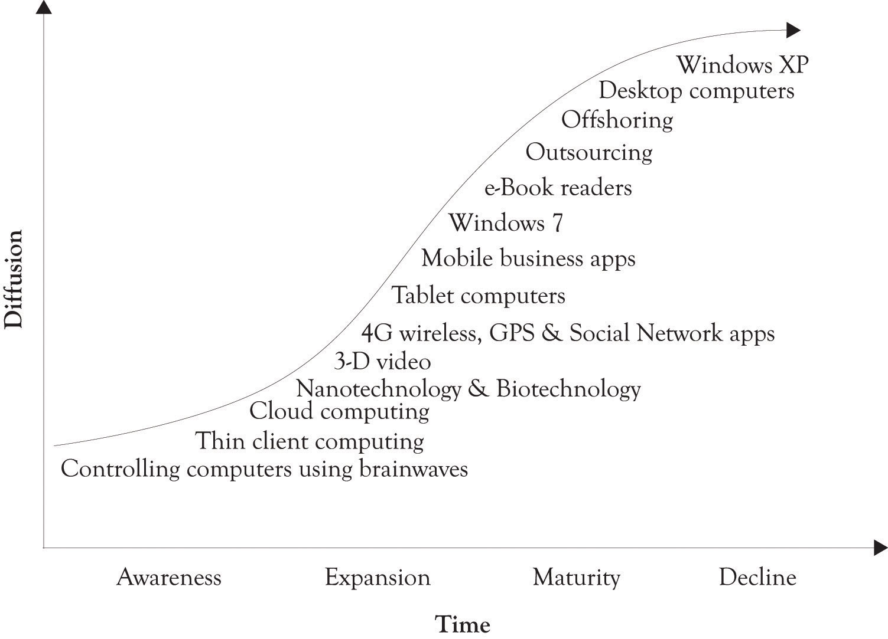

Life cyclesSeries of stages though which something passes during its lifetime. are a very useful way to understand how products and technology evolve over time. They are very useful in tracking product and process differentiation. They can be used to understand the evolution, growth, and decline of ideas and phenomena in the physical world, the plant and animal kingdom, and technology. The most commonly used life cycles in business are the technology life cycles and the product life cycles. They are used to track the diffusion of technologies and products.
DiffusionThe acceptance, adoption, and awareness of a technology or a product by individuals. is the acceptance, adoption, and awareness of a technology or a product by individuals. The technology and product life cycles are essentially the same, except the product life cycle is focused on selling products while the technology life cycle is focused on innovation. The technology and product life cycles consists of four phases that follow the classic S-curve and they consist of awareness of the technology, technological growth, technological maturity, and a decline of interest in the technology (see Figure 1.1 "Technology Life Cycle"). Figure 1.2 "Technology Life Cycle Profile in 2011" illustrates a snapshot of where we believe several technologies belong in the life cycle in 2011.
Figure 1.1 Technology Life Cycle
Figure 1.2 Technology Life Cycle Profile in 2011
